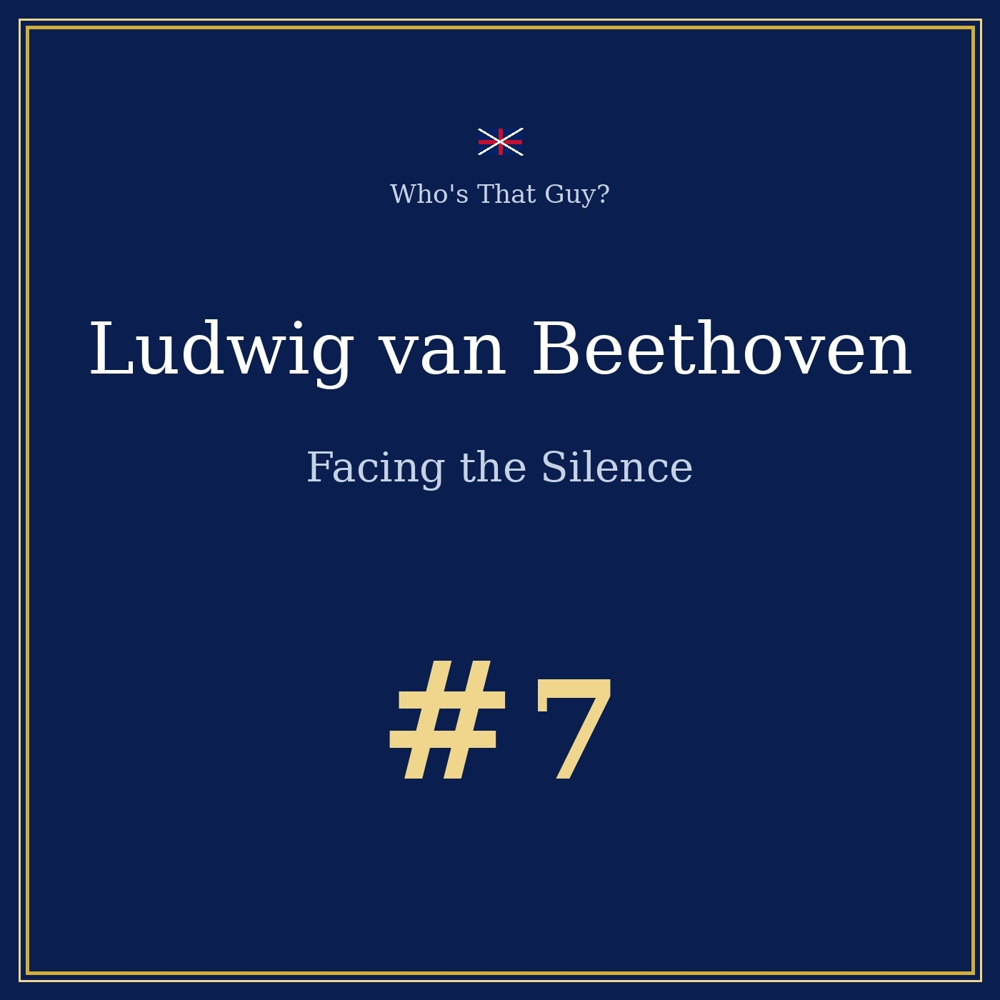
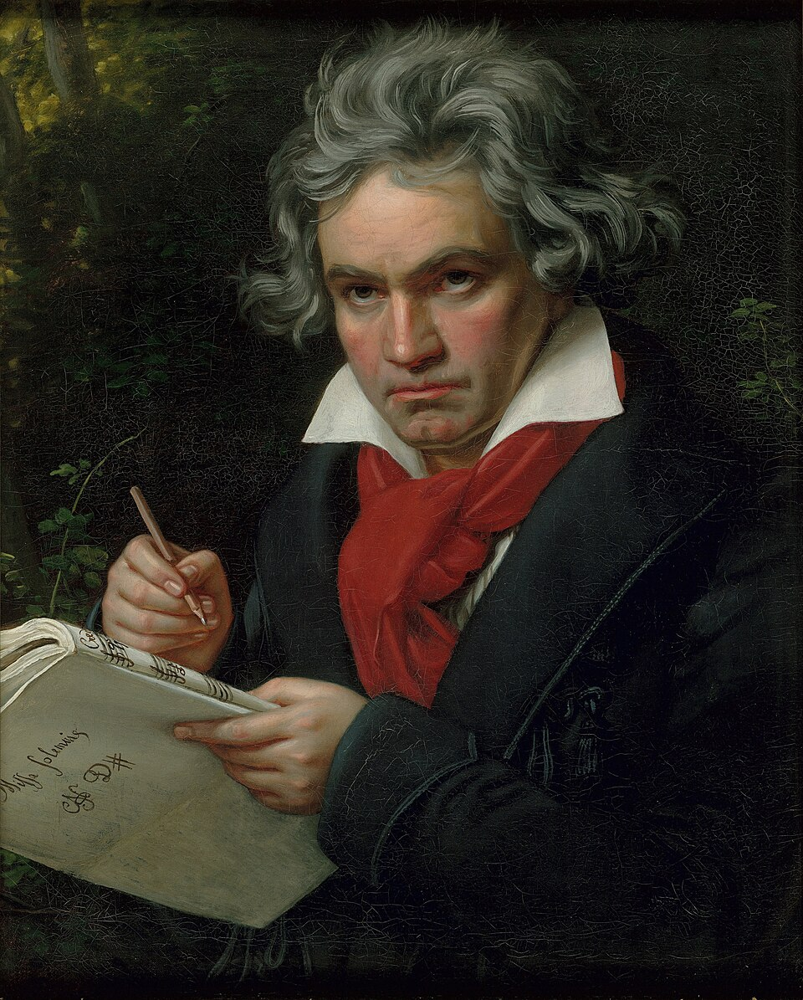

Episode 7 — the composer who stopped hearing, and kept composing
This program is a documentary portrait for educational and cultural purposes. The person interviewed really existed and the biographical facts are real and verifiable; the interview itself is an imagined reconstruction.

🎧 Listen to the portrait: Beethoven Facing the Silence, 14 min 20 — Listen on Spotify →

Ludwig van Beethoven was born in Bonn in December 1770. His father, short and tremulous, drank and wanted a second Mozart; he pressed his son at the harpsichord before five. His real teacher was his mother, and when she died of tuberculosis in 1787 he was 16. He had joined the court orchestra as a violinist at thirteen; by the time she was gone, the two boys still at home looked to Ludwig. "Perhaps that is why I speak loudly and walk with my head high," he says in our interview.
It was at 26 that the whistling began: a hum and ringing he took for a passing fever, while he was the most feared pianist in Vienna. The cause — otosclerosis, infection, lead, unknown — is still debated. He hid it for years: candles held near his face to read lips by their light, an automatic "yes, magnificent!" when he had heard nothing. He consulted dozens of doctors; one charlatan promised a cure with tree branches, and he paid him.
"A deaf musician is a living dead man! Who would entrust his music to a man who cannot hear it?"
Long before the premiere of 1824, in the autumn of 1802, Beethoven went to the village of Heiligenstadt, an hour from Vienna, under the pretext of rest. In truth he went to die. He wrote a long letter to his brothers that he never sent — the Testament of Heiligenstadt — because he could not say it aloud:
"I would have put an end to my days — it was almost solely my art that held me back." — Testament of Heiligenstadt, 1802
The letter was found after his death. Beethoven did not stay alive out of courage, but out of duty to what was still moving in his head. And something did start moving again: the Eroica, the Fifth, Fidelio — and, once the deafness became total, works nobody had imagined.
On 7 May 1824, at the Kärntnertortheater in Vienna, the Ninth Symphony was premiered with its Ode to Joy. Beethoven insisted on conducting. They granted him the gesture, not the reality: the real conductor, Umlauf, stood beside him, and the orchestra followed Umlauf. He beat time in a world without sound; at one point he thought the orchestra had stopped, and kept beating.
At the end, the singer Unger took his sleeve and turned him towards the hall — on its feet for minutes, hats in the air, cries, thunderous applause. He never heard a second of it. The most famous deaf man in the world received the greatest sound of his life as a picture, not a noise.
From 1818 on, visitors no longer spoke to Beethoven: they wrote their questions in a notebook, and he answered out loud. That is the method of our interview — questions put to paper, answers read in a room where the man heard only the silence of his own pen. The conversation books survive: some 137 of them.
The work was done on vibration. Visitors described him finding the piano dismantled, its legs pulled off, standing on the bare floor with a baton held between his teeth, the other end on the strings: the note travels along the wood, the jaw catches it, the bone carries it to the skull. He did not hear the note — he became it. And there was the walking: the Canette on his arm, the notebook in his pocket, hours in the countryside with semiquavers scratched into paper, some carried thirty years before use.
Beethoven was not only deaf, he was broke. In 1802 he had to borrow to avoid court service; advances were taken on unwritten works, and his patrons — the Lobkowitz family, the Archduke Rudolf, Breitkopf & Härtel — carried him.
His will of 1826, drawn up the day after his nephew Karl left for the army, left everything to Karl; a codicil signed three days before his death confirmed it. Beethoven answers with the only currency he trusts: "Do not take my word for it. Believe my scores. They do not lie. Letters get interpolated, memories get tidied up, but a modulation cannot be falsified." His secretary Schindler, who outlived him, burned and rewrote pages of the conversation books to manufacture the Beethoven of the textbooks.
The Third Symphony, the Eroica, is where the deaf composer becomes a modern one. Beethoven began it in 1803, finished it in 1804, and meant to dedicate it to Napoleon Bonaparte — until the First Consul crowned himself emperor. Having written a "consecration of the heroic", he tore the title page. The Eroica enlarged what a symphony could hold — two long outer movements, a scherzo like a revolution, a funeral march with no occasion — and every later work inherits it.
And so the Ninth, written in the last decade of a life spent at 56 years old. Our interview takes place in the winter of 1826, in the apartment at the Schwarzspanierhaus where he wrote the last quartets. In those quartets — among them the movement titled Holy Song of Thanksgiving by a Convalescent to the Divinity — he treats silence as a subject, not a wound. He also published metronome markings, perfected by Maelzel — the man who built him his ear trumpets — figures that do not tremble and flatter no one.
The journey never quite ends. He began sketching a Tenth, and left it unfinished. Asked what the first sound would be if silence lifted, he did not ask for a symphony:
"A chord. Three notes laid one upon another, holding one another, like three reconciled brothers."
Sources: Wikipedia (Beethoven, Symphony No. 9, Heiligenstadt Testament), Britannica, Beethoven-Haus Bonn. Fact-checked November 2026.